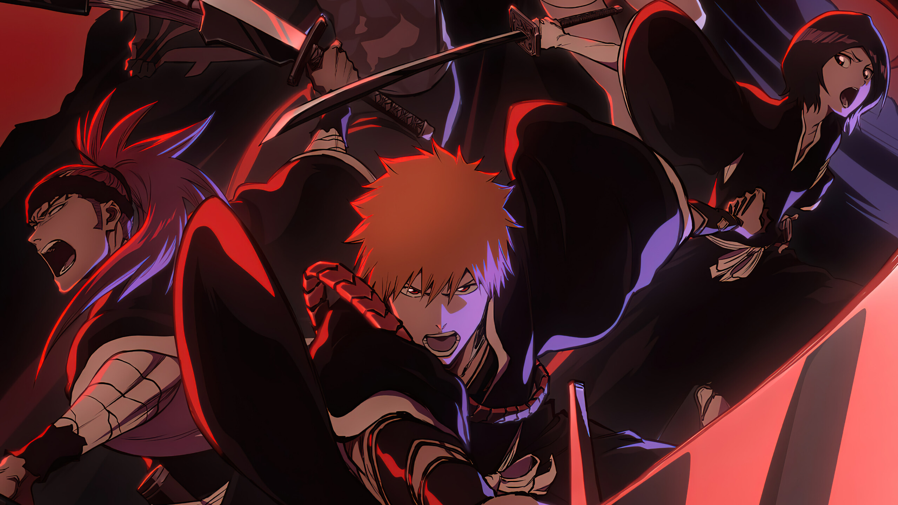
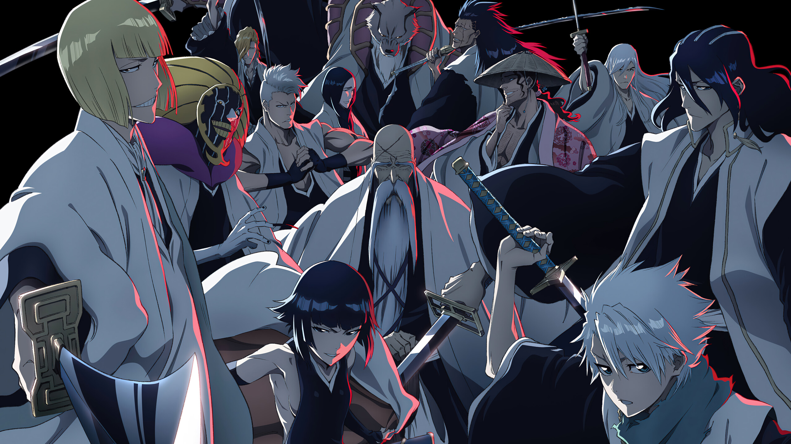
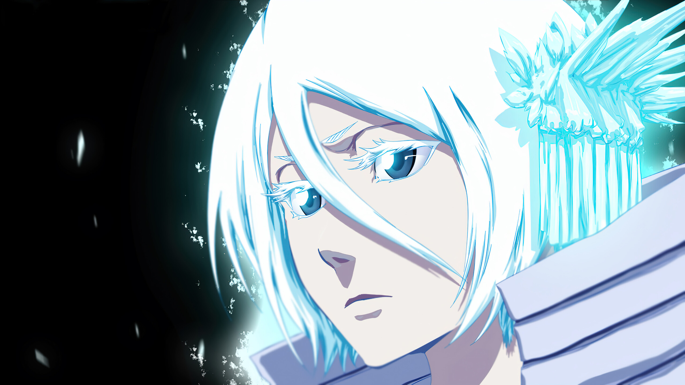
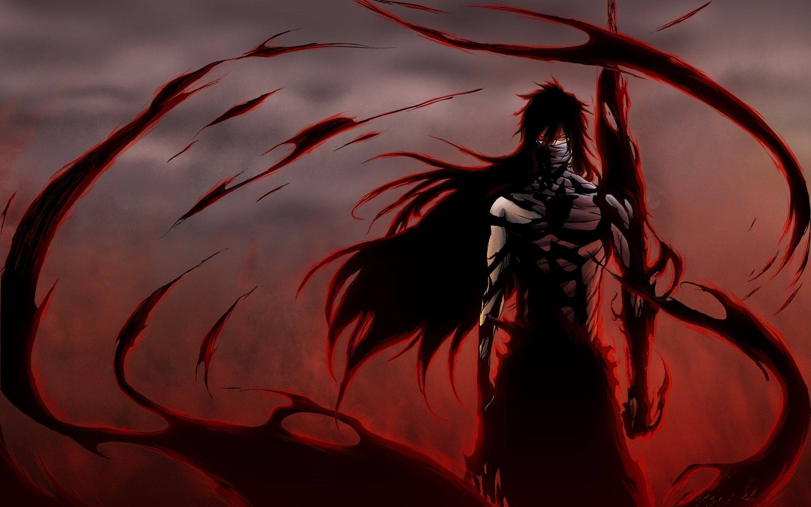
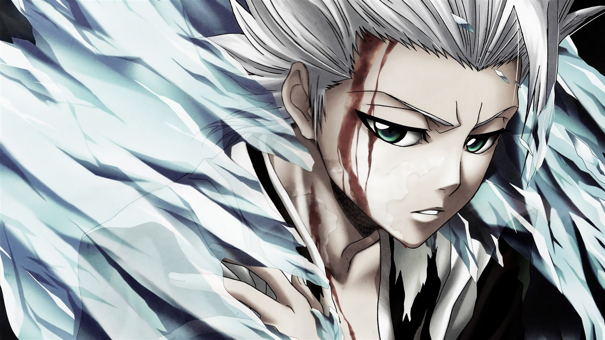

A história de Bleach gira em torno de Ichigo Kurosaki, um adolescente que tem a capacidade de enxergar e interagir com os mortos, até que em uma noite ele recebe a visita de uma shinigami (entidade sobrenatural encarregada de purificar os espíritos malignos da Terra) e devido a alguns acontecimentos, Ichigo se torna um shinigami e passa a exercer essa tarefa.